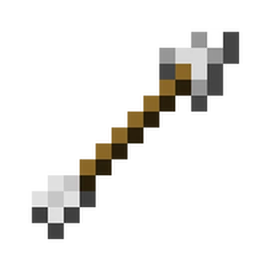

Пояснення: Яке гарне небо.. Кхм ми вже у звичайному світі так що треба відправлятися у подорож за головою ендер дракона!
Крок 1: Першим ділом треба перекрафтити всі елементи у око ендера! Воно допоможе нам знайти портал та активувати його за діло!

Крок 2: Кидаючи око ми можем дізнатися у який бік треба йти щоб знайти портал якщо око йде до низу ми у правильному місце копаємо до низу! За діло! Путь буде довгим та якщо ти знайдешь можешь поторгуватися з селянами у селі
Крок 3: Але погодь! Нам треба роздобути лук! Дочекайся ночі та вбивай павуків та скелетів (обов'язково збирай лут) стріл нам треба штук 64-128 я думаю встачить та також треба ведро води це не важка справа 3 заліза та вода і ти страх всіх ендерменів!
А тепер час вбивати дракона погнали!